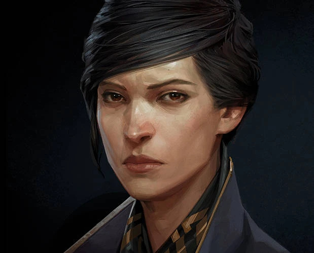
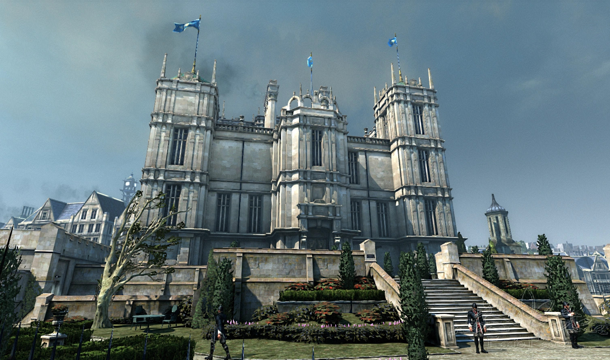
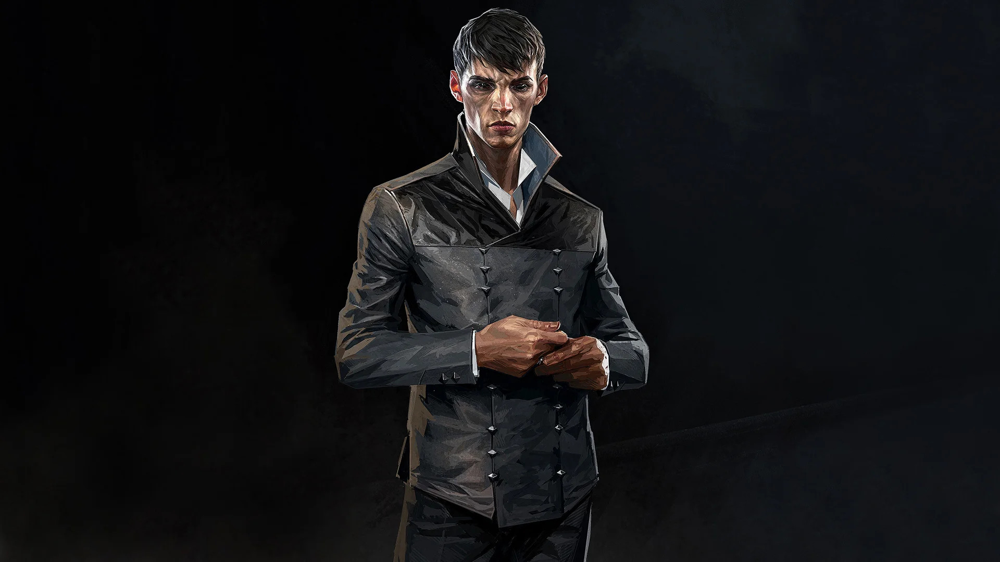
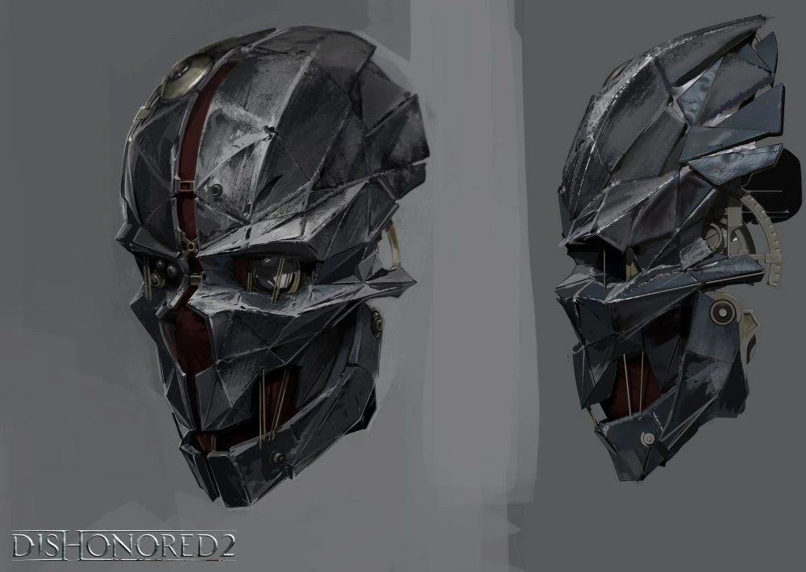
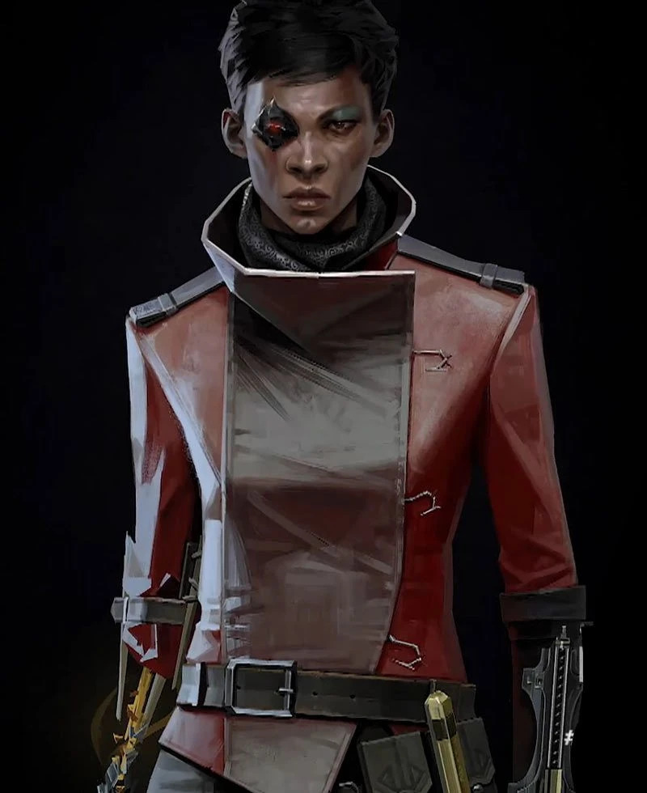
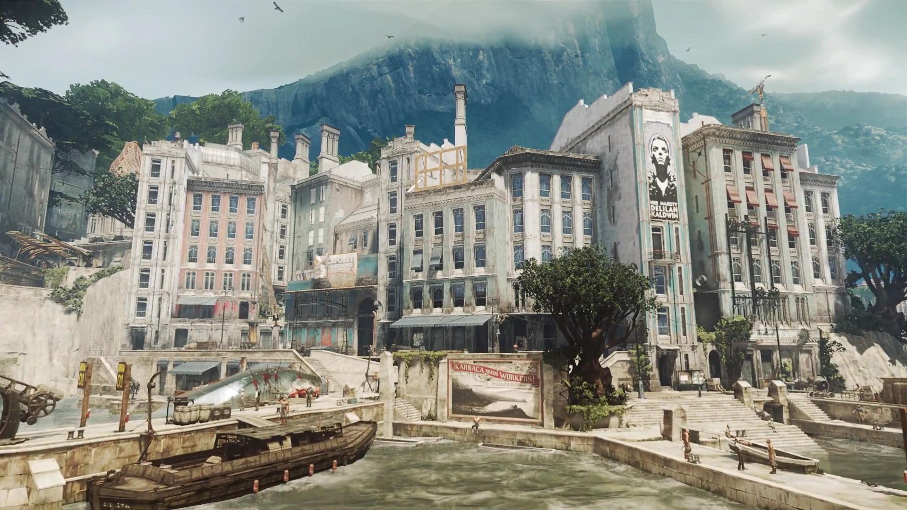
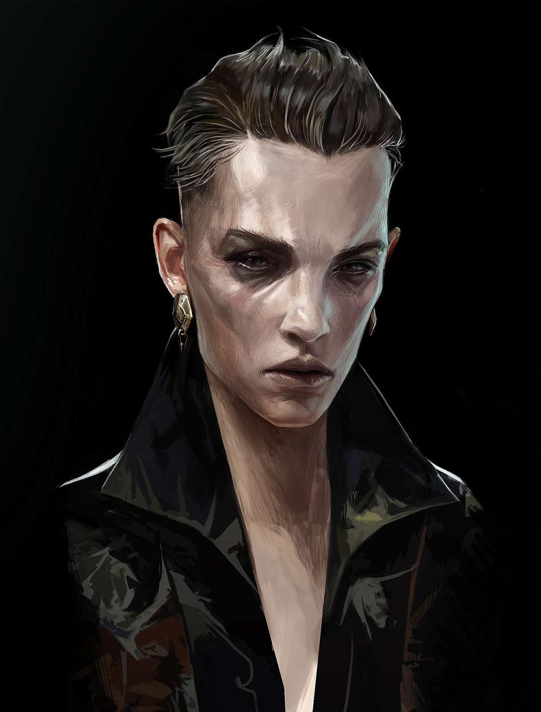
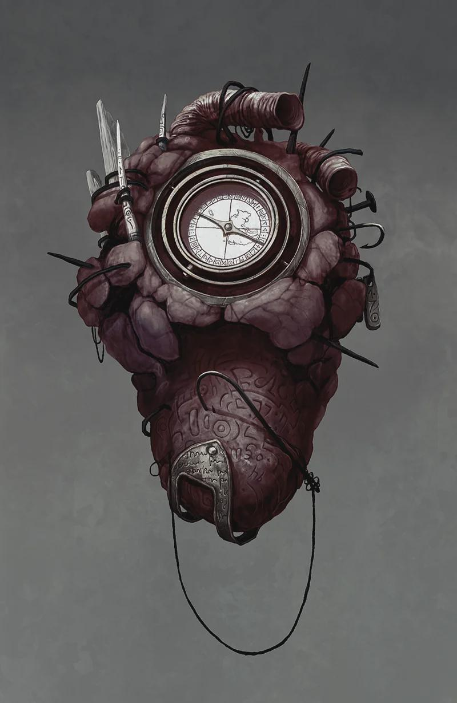
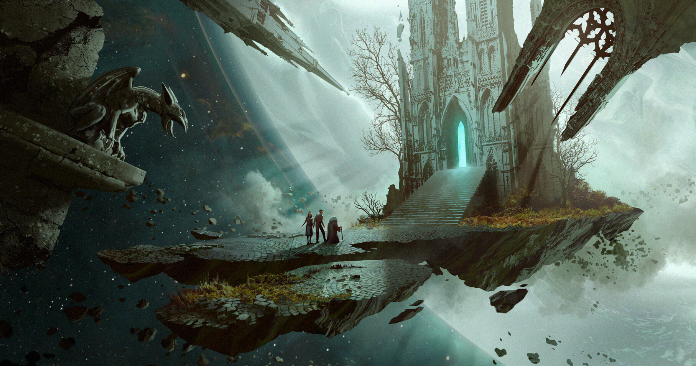

Visions de l'Empire
Voici une collection d'images tirées des archives de l'Empire des Îles. Vous y verrez les rues pavées de Dunwall, infestées par les rats de la peste, ainsi que les falaises venteuses de Karnaca. Observez les détails des mécanismes créés par Anton Sokolov et Kirin Jindosh, ces inventeurs de génie qui ont façonné notre ère moderne grâce à l'huile de baleine. Chaque image raconte une histoire, celle d'un assassinat silencieux, d'un combat brutal ou d'un moment de contemplation face au Grand Vide. Les masques portés par les protagonistes ne sont pas seulement des protections, ils sont les visages de la vengeance et de la justice. Prenez le temps d'admirer l'architecture victorienne mêlée à la technologie steampunk qui donne à cet univers son cachet si particulier. Plongez dans ces décors où la lumière peine à percer le brouillard industriel, révélant la beauté mélancolique d'une civilisation en déclin. Que vous soyez un protecteur loyal ou un assassin impitoyable, ces fragments de mémoire témoignent de la grandeur et de la décadence de l'Empire, figés pour l'éternité









